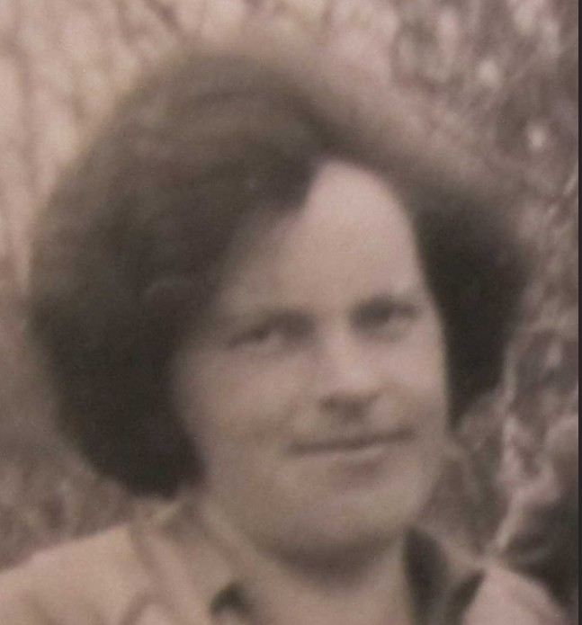

Född
27 mar 1967
i Norrköpings Matteus (E)
27
.
Född
27 mar 1967
i Norrköpings Matteus (E)
27
.
|
Född
22 aug 1932
i Kimstad (E)
1
.
|
|
Lennart Emanuel Karlsson
Född 22 aug 1932 i Kimstad (E) 1 . |
F
Harald Emanuel Karlsson.
Född 15 nov 1908 i Säby, Östra Stenby (E) 2 . Död 17 jun 1991 i Eskilsvägen 8 A, Skärblacka, Kullerstad (E) 3 . |
||
|
M
Viola Esselia Karlsson.
Född 12 jun 1910 i Hästhagen, Spolstad, Gårdeby (E) 4 . Död 4 feb 1995 i Ribbingsholmsvägen 3, Skärblacka, Kullerstad (E) 3 . |
MF
Gustaf Leonard Karlsson.
Född 29 sep 1872 i Hästhagen, Spolstad, Gårdeby (E) 5 . Död 24 nov 1926 i Sågen, Landsjö, Kimstad (E) 6 . |
||
|
 MM Helmina Esselia Karlsson.Född 31 jul 1884 i Nystugan, Kalerum, Gryt (E) 7 . Död 26 dec 1963 på S:t Olofsgatan 22, Gård 11, Kv Målaren, Söderstaden, Norrköping, Norrköpings Sankt Olai (E) 3 . |
MMF Karl Peter Karlsson. Född 27 feb 1837 i Käggla/Kägglö, Tryserum (E) 8 . Död 23 feb 1904 i Hästhagen, Spolstad, Gårdeby (E) 9 . |
||
|
MMM Anna Sofia Svensdotter. Född 21 apr 1848 i Björklund, Rullerum, Ringarum (E) 10 . Död 8 jul 1932 i Hagsätter, Halleby, Skärkind (E) 11 . |
|
Gift
30 nov 1957
19
.
Saga Kerstin Elisabet Karlsson f Sandell. Född 30 nov 1937 i Nykil (E) 25 . Död 23 maj 2014 i Bråttom 6, Bråttom 1:9, Norrköpings Borg (E) 3 . |
Framställd 12 aug 2026 med hjälp av Disgen version 2025.